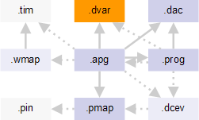

Device architecture file
The device architecture file describes the physical characteristics of the DUT, in particular the mapping of logical to physical addresses.

The device architecture file has the .dvar file name extension. It is referenced from the APG pattern file with the :deviceArchitecture: keyword.
The device architecture files contains the scrambling, bit inversion, and bit ordering settings.
You also define certain device parameters (the x, y, and z dimensions of the memory and the data size) and have the option of defining custom parameters. All parameters are available in the APG program file.
You can also specify a maintenance operation (refresh). This is discussed in more detail in Maintenance operations.
The syntax for these settings is described in Device architecture file syntax.
Example
This is an example of a device architecture file for an DRAM device. It contains address scrambling, bit inversion, cyclic redundancy checks, and device parameter definitions.
:deviceArchitecture:
{
:version: 1.0
:scramble:
{
:name: "address scrambling"
:table:
{
:format:
{ :bit: :expression: }
{ xa0 "not x0" }
}
}
:bitInversion:
{
:name: "bit inversion"
:table:
{
:format:
{ :bit: :expression: }
{ d[0..7] x0 }
}
}
:bitOrdering:
{
:name: "bit ordering"
:table:
{
:format:
{ :bit: :expression: }
{ d[15..0] "not x1" }
{ d[0..15] x1 }
}
}
:crc:
{
:name: "my_crc"
:bitExpression:
{
:name: "my_crc_expression"
:table:
{
:format:
{ :bit: :expression: }
{ "0" "e[0]^e[8]" }
{ "1" "e[1]^e[9]" }
{ "2" "e[2]" }
{ "3" "e[3]" }
{ "4" "e[4]" }
{ "5" "e[5]" }
{ "6" "e[6]" }
{ "7" "e[7]" }
}
}
:bitSequence:
{
:name: "my_crc_bitOrder"
:table:
{
:format:
{ :pinList: :sequence: }
{ DQ.000,DQ.008,DQ.016,DQ.024 [0..1] }
{ DQ.001,DQ.009,DQ.017,DQ.025 [2..3] }
{ DQ.002,DQ.010,DQ.018,DQ.026 [4..5] }
{ DQ.003,DQ.011,DQ.019,DQ.027 [6..7] }
{ DQ.004,DQ.012,DQ.020,DQ.028 [8..9] }
{ DQ.005,DQ.013,DQ.021,DQ.029 [10..11] }
{ DQ.006,DQ.014,DQ.022,DQ.030 [12..13] }
{ DQ.007,DQ.015,DQ.023,DQ.031 [14..15] }
{ dbii.000,dbii.001,dbii.002,dbii.003 [16..17] }
}
}
:configuration:
{
:name: "crcConfig1"
:bitSequence: "my_crc_bitOrder"
:bitExpression: "my_crc_expression"
}
}
:maintenanceOperation:
{
:name: BurstRefresh
:table:
{
:format:
{ :operation: :subroutine: }
{ maintop_a refreshBurst }
}
}
:deviceParam:
{
:format:
{ :name: :value: }
{ xBits 10 }
{ yBits 8 }
{ dBits 16 }
}
}Functional changes
- Introduced before SmarTest 6.3.2